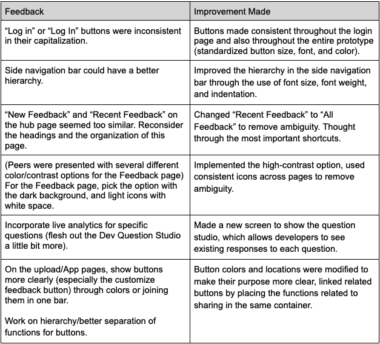

Context
The primary objective of this project was to choose a start-up, find out what problem they were attempting to solve, and then come up with a high-fidelity prototype to address that issue.
Steps
1) Brainstorming: Working togather as a team to figure out what we wanted to build
2) Lo-fi Design and Wireframing: Low-fidelity sketches to experiment with different layouts, then finalizing wireframes in Balsamiq
4) Hi-fi Prototyping: High fidelity prototyping in Figma
5) Feedback: Critique from peers and subsequent modifications
6) User Testing: User testing through ____ and analysis of the tests
7) Lessons Learned
Competencies demonstrated
Wireframing | Figma | Iterative Prototyping | User Testing | Groupwork
If you found this project interesting, you can read the unabridged project synopsis
here
Brainstorm
Our group decided to choose Wolfia which was founded by Fabiel Devos and Naren Manoharan in 2022. The problem/question that they were addressing was: how do we get feedback to mobile/web app
developers more efficiently and effectively, and from multiple different sources (eg. developers, users, designers, etc.)? They decided that problem would be best addressed through creating an app
that generates a link for feedback that can be sent to anyone. We iterated on that idea, and created a web-app prototype with multiple "sides", the "Developer" for the OG developers to ask for specific
feedback and manage it (bugs, written feedback, survey questions etc. ) and another "Reviewer" side where users could use tools (code and non-code) to leave feedback.
Lo-fi Design
We generated ideas for our design by creating quick sketches exploring various possibilities for the website's interfaces. We focused on the pages enabling users to upload an app, view feedback on their app, and leave feedback on apps created by others.

Link Generation

Feedback Studio

Developer Feedback Stream
Hi-fi Prototyping
Building on our wireframe, we created a high-fidelity prototype to demonstrate the final look and interactive elements of the website. You can interact with the entire prototype
here.

Link Generation

Feedback Studio

Developer Feedback Stream
Critique and Feedback
During a critique session, our peers pointed out some places where we could improve hierarchy and accessibility for users and developers alike.

User Testing
We gave users a series of tasks to test our prototype:
Context: Imagine you are a developer of a new app. Your goal is to find feedback left on the most recent version of the app.
Note that you will be testing an interactive prototype of the application–not a real website. Please think aloud as you complete the tasks.
Overarching task: Check feedback on App 1, edit question for app 1
Step 1: Log in to the site. Find feedback for App 1 and verbally confirm how many bugs were found.
Step 2: Were you able to complete the task?
Step 3: How easy was it to complete the task? (1-very hard, 5-very easy)
Step 4: Navigate to the App1 project and customize its feedback. What was the most common response to the question “How would you rate this app?”
Step 5: Were you able to complete the task?
Step 6: How easy was it to complete the task? (1-very hard, 5-very easy)
Step 7: Edit the “How would you rate this app?” question. Adjust the settings to make this question not required and confirm your changes.
Step 8: Were you able to complete the task?
Step 9: How easy was it to complete the task? (1-very hard, 5-very easy)
Analysis of User Testing
For the first task, finding feedback for App 1, two of the users found the task to be straightforward and very easy, while the third user struggled to navigate the site after getting caught on the “Reviewer” side of the interface as opposed to the “Developer” side. For the second and third tasks, all three of the users found the tasks to be straightforward and were able to complete them in a timely manner.
Future Directions
Based on user feedback, we would incorporate more action validation into the interface to keep users informed – this aligns with the interaction principle of visibility of system status. For example, we could incorporate pop-up windows, informative messages, or progress bars to show the user if their desired action has been completed. Additionally, we would increase the separation between the Reviewer and Developer sides of our prototype and the site itself by having the user link pop up in a new browser window. This would address the interaction principle of error prevention. We could also potentially add more color to the website to increase visual interest.
Lessons Learned
Through this project, I learned a lot about Figma and principles of interaction. Inspired by Jacob Nielsen's Rule of Thumb, we considered different principles related to interaction, navigation, and hierarchy. I also learned about the importance of feedback and user testing throughout the development process.